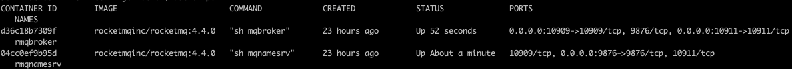

RocketMQ 分布式MQ和流平台
简介
- 开源，Apache2.0
- Pull模式
- 低延时，亿级
- 高可靠，磁盘数据固化
- 易扩容
- 支持Scheduled
- 支持广播
- 支持条件过滤
安装（docker版）
安装需求：
- 64位，类Unix系统
- JDK 1.8以上
- Broker节点需要4G以上硬盘
git clone https://github.com/apache/rocketmq-externals.git
cd rocketmq-externals/rocketmq-docker/4.4.0
./play-docker.sh # 编译并启动镜像，非常简单人性化
# 测试生产者
docker exec -ti rmqbroker sh ./tools.sh org.apache.rocketmq.example.quickstart.Producer
# 测试消费
docker exec -ti rmqbroker sh ./tools.sh org.apache.rocketmq.example.quickstart.Consumer
启动参数：
-e "MAX_POSSIBLE_HEAP=100000000"指定jvm内存heap
运行效果: 
优雅关机：
-
docker exec -ti rmqbroker sh ./mqshutdown broker先关brokerThe mqbroker(28) is running... Send shutdown request to mqbroker(28) OK -
docker exec -ti rmqnamesrv sh ./mqshutdown namesrv再关namesrvThe mqnamesrv(27) is running... Send shutdown request to mqnamesrv(27) OK
核心
架构图

使用（CLI）
用法：bin/mqadmin <命令> <参数>
命令如下：
updateTopic Update or create topic deleteTopic Delete topic from broker and NameServer. updateSubGroup Update or create subscription group deleteSubGroup Delete subscription group from broker. updateBrokerConfig Update broker's config updateTopicPerm Update topic perm topicRoute Examine topic route info topicStatus Examine topic Status info topicClusterList get cluster info for topic brokerStatus Fetch broker runtime status data queryMsgById Query Message by Id queryMsgByKey Query Message by Key queryMsgByUniqueKey Query Message by Unique key queryMsgByOffset Query Message by offset printMsg Print Message Detail printMsgByQueue Print Message Detail sendMsgStatus send msg to broker. brokerConsumeStats Fetch broker consume stats data producerConnection Query producer's socket connection and client version consumerConnection Query consumer's socket connection, client version and subscription consumerProgress Query consumers's progress, speed consumerStatus Query consumer's internal data structure cloneGroupOffset clone offset from other group. clusterList List all of clusters topicList Fetch all topic list from name server updateKvConfig Create or update KV config. deleteKvConfig Delete KV config. wipeWritePerm Wipe write perm of broker in all name server resetOffsetByTime Reset consumer offset by timestamp(without client restart). updateOrderConf Create or update or delete order conf cleanExpiredCQ Clean expired ConsumeQueue on broker. cleanUnusedTopic Clean unused topic on broker. startMonitoring Start Monitoring statsAll Topic and Consumer tps stats allocateMQ Allocate MQ checkMsgSendRT check message send response time clusterRT List All clusters Message Send RT getNamesrvConfig Get configs of name server. updateNamesrvConfig Update configs of name server. getBrokerConfig Get broker config by cluster or special broker! queryCq Query cq command. sendMessage Send a message consumeMessage Consume message